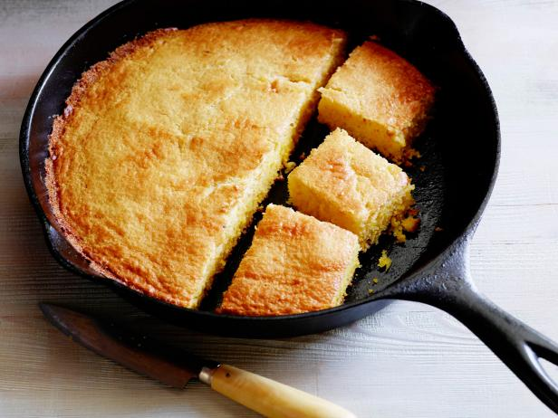

The Cast Iron Skillet Blog
The Cast Iron Skillet BlogCast Iron Cornbread Recipe

Ingredients
- 1 cup yellow cornmeal
- 1 cup all-purpose flour
- 1/4 cup granulated sugar
- 1 tablespoon baking powder
- 1/2 teaspoon salt
- 1 cup whole milk
- 1/4 cup vegetable oil
- 2 large eggs
- 1/2 cup corn kernels (fresh or canned)
Instructions
- Preheat your oven to 400°F (200°C) and place a 10-inch cast iron skillet in the oven while it preheats.
- In a large mixing bowl, whisk together the cornmeal, flour, sugar, baking powder, and salt until well combined.
- In a separate mixing bowl, whisk together the milk, vegetable oil, and eggs until well combined.
- Pour the wet ingredients into the dry ingredients and mix until just combined. Fold in the corn kernels.
- Remove the skillet from the oven (careful, it will be hot!) and pour the batter into the skillet, spreading it evenly with a spatula.
- Bake the cornbread for 20-25 minutes or until the top is golden brown and a toothpick inserted into the center comes out clean.
- Remove from the oven and let cool for 5-10 minutes before slicing and serving.